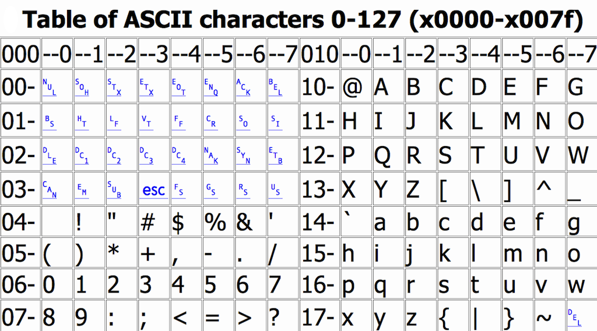

Wat is het binairstelsel?
In de wereld van de comuters wordt er vaak gewerkt met een tweetallig getalstelsel ook wel het binairstelsel genoemd. Het binairstelsel is een systeem dat bestaat uit 2 waardes, de waarde "0" en de waarde "1". In de informatica worden de waarden "0" en "1" binaire getallen genoemd en vertaald naar binair getal, ookwel een beetje genoemd. Een beetje van deze waardes "0" en "1" kun je gebruiken om aan te geven dat het een beetje is om elektronische pulsen weer te geven. Waarbij de waarde "0" wordt gebruikt als ontkoppeling en "1" als verbinding. Dus je kan zeggen dat het een uit en aan proces is. Op deze manier kan de computer dus apps instaleren, kan de computer instructies volgen, een tekst lezen en gegevens onthouden.

Hoe werkt het binairstelsel?
De binaire getallen worden gemaakt door de rijtjes van de getallen "0" en "1". Het maakt dus gebruik van een tweetallig getallenstelsel. Een van die cijfers worden ookwel een bit genoemd. Een reeks van 8 van die waardes wordt een byte genoemd.
Het ASCII-tabel
ASCII staat voor American Standard Code for Information Interchange "standaartcode voor informatitie uitwisseling". Het is een standaard voor tekens die op de alle typen computers wordt laten zien. Deze code is bedacht door een commissie met onder andere Hugh McGregor Ross en Bob Bemer. Het is een code voor een tabel waarin je kunt aflezen hoe van elk karakter de cijfers, letters, leestekens en stuurcodes. Deze kunne decimaal, hexadecimaal, octaal en binair genoteerd worden. De tekst van een ASCII-tabel bevat enkel en alleen tekens van het toetsenbord dus geen afbeeldingen of eventuele andere codes voor de opmaak. Er bestaan er 127 ASCII-codes die gaan van 0 tot 127. Deze intotaal 128 ASCII-codes werden samengesteld door een 7-bits-code. Als er een 8ste bite wordt toegevoegd, kunnen er extra tekens en letters worden toegevoegd en zo onstaat er een uitgebreide ASCII-code die wel tot 256 tekens kan bestaan.
 Go Play The Game